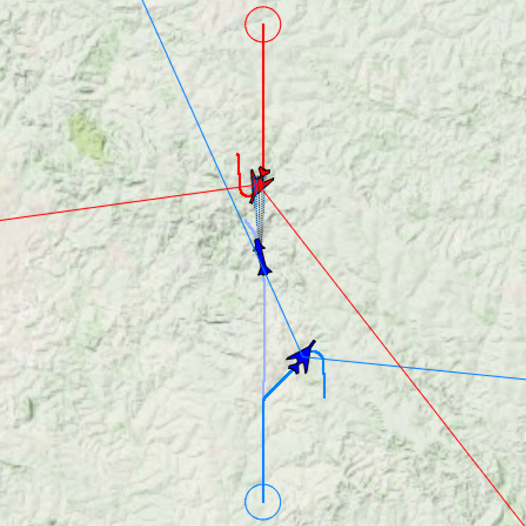
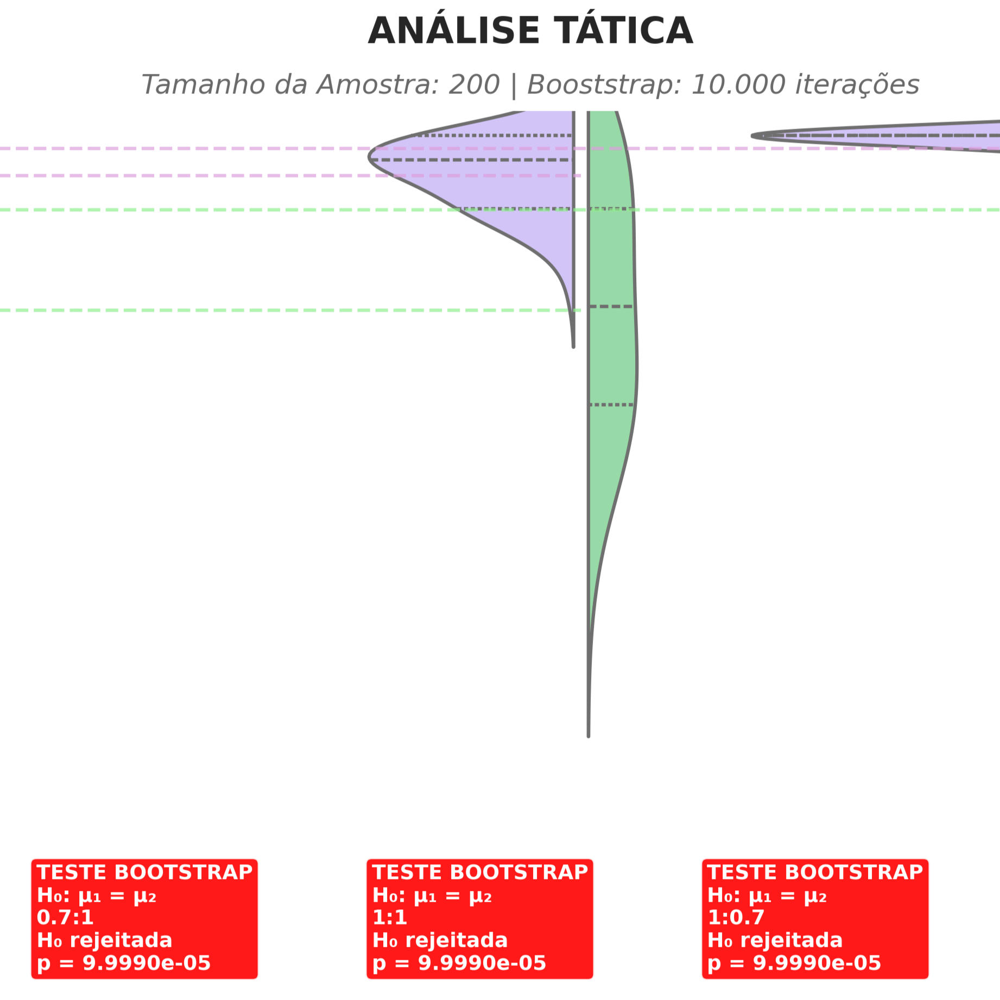
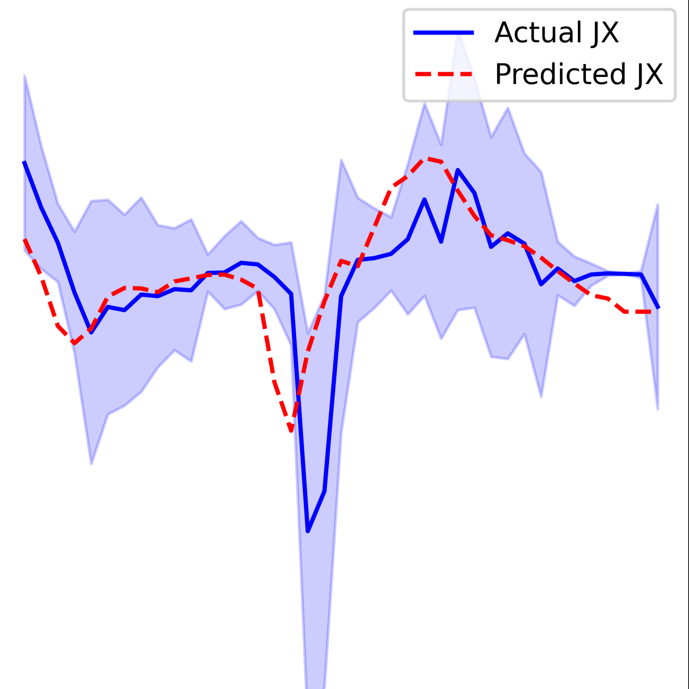
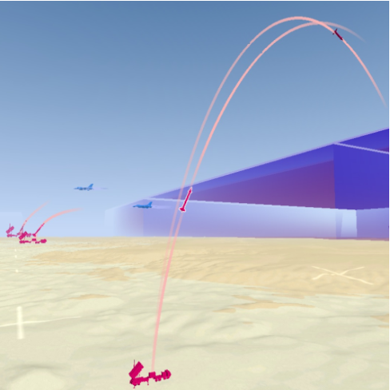
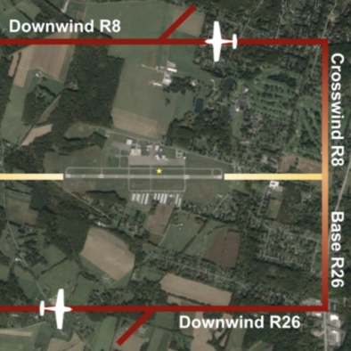
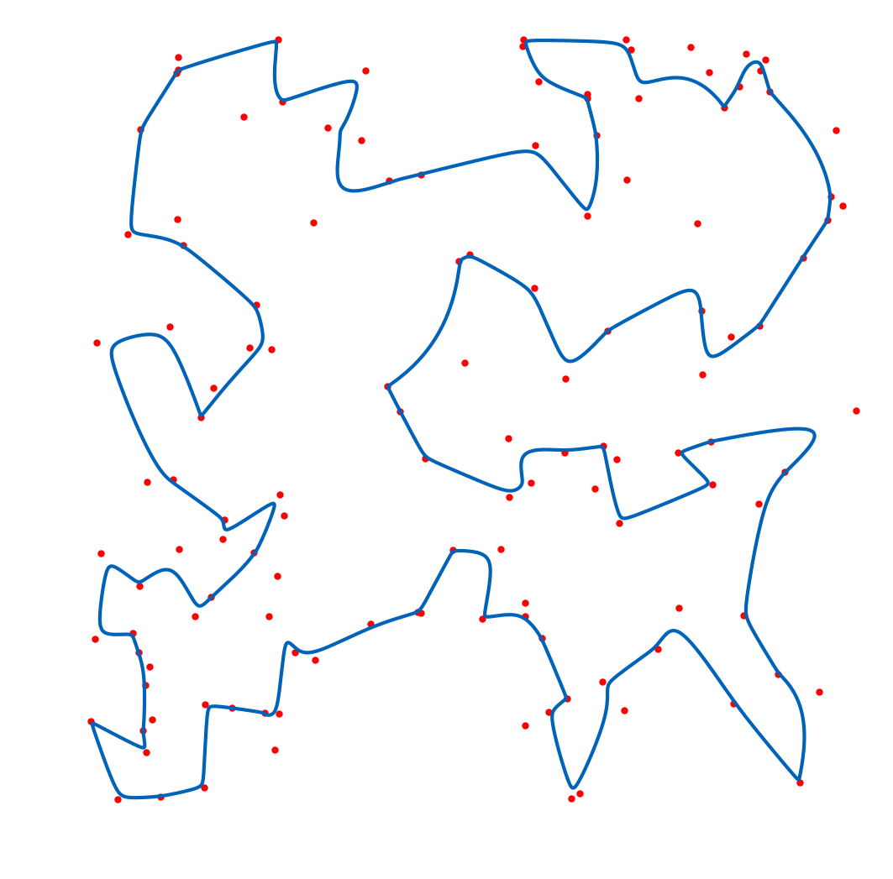
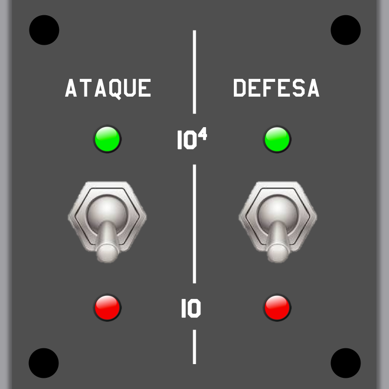

Publications
Journals

* Equal contribution
IEEE Access, 2025

* Equal contribution
IEEE Access, 2025

Spectrum: The Journal of Operational Applications in Defense Areas, 2025

Journal of Open Aviation Science, 2025

Nature Scientific Data, 2025
The Journal of Defense Modeling and Simulation, 2025

* Equal contribution
IEEE Robotics and Automation Letters, 2024
Spectrum: The Journal of Operational Applications in Defense Areas, 2024

IEEE Latin America Transactions, 2022

Simulation: Transactions of the Society for Modeling and Simulation
International, 2021

Spectrum: The Journal of Operational Applications in Defense Areas, 2020

Spectrum: The Journal of Operational Applications in Defense Areas, 2017
Conferences

Simpósio de Aplicações Operacionais em Áreas de Defesa (SIGE), 2025

Simpósio de Aplicações Operacionais em Áreas de Defesa (SIGE), 2025
Congresso Acadêmico sobre Defesa Nacional (CADN), 2025
Computational Science and Computational Intelligence (CSCI), 2024

Conference on Principles of Advanced Discrete Simulation (PADS), 2024

Winter Simulation Conference (WSC), PhD Colloquium, 2024
Conference on Principles of Advanced Discrete Simulation (PADS), PhD
Colloquium, 2024
Simpósio de Aplicações Operacionais em Áreas de Defesa (SIGE), 2024

Congresso Acadêmico sobre Defesa Nacional (CADN), 2024

Interservice/Industry Training, Simulation and Education Conference
(I/ITSEC), 2023
Congresso Acadêmico sobre Defesa Nacional (CADN), 2023

Conference on Principles of Advanced Discrete Simulation (PADS), PhD
Colloquium, 2023

Winter Simulation Conference (WSC), 2022

International Conference on Robotics and Automation (ICRA), Aerial Robotics
Workshop, 2022

Brazilian Conference on Intelligent Systems (BRACIS), 2021

Latin American Robotics Symposium (LARS), 2021

National Meeting on Artificial and Computational Intelligence (ENIAC), 2021

Simpósio de Segurança de Voo (SSV), 2018

XIX Encontro de Iniciação Científica e Pós-Graduação do ITA (ENCITA), 2013

XVIII Encontro de Iniciação Científica e Pós-Graduação do ITA (ENCITA), 2012
Theses
PhD Thesis, Aeronautics Institute of Technology, 2025

Master's Thesis, Aeronautics Institute of Technology, 2018

Senior Thesis, Aeronautics Institute of Technology, 2015